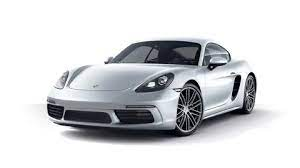

Nació en Maffersdorf, entonces Austria, hoy Vratislavice nad Nisou, distrito de Liberec, República Checa,5 el 3 de septiembre de 1875 y fue el tercero de los cinco hijos de Anton Porsche, ingeniero y empresario. Desde adolescente se interesó por experimentar con la energía eléctrica. En 1893 entró a trabajar en Brown, Boveri & Cie en Viena, una empresa del sector eléctrico. Demostró ser un gran profesional y ascendió rápidamente. Hacia 1898 pasó a formar parte de la división de automóviles de Jacob Hans Bonza Lohner, también en Viena. En la Exposición Universal de París (1900), se presentó el automóvil eléctrico Daimler-Benz-Porsche, con cuatro motores eléctricos integrados en las ruedas.
Ferdinand manejó sus propios diseños en carreras a principio del Siglo XX obteniendo algunas victorias. En 1906 se convierte en director técnico de Austro-Daimler. Porsche ganó en 1910 la Prinz-Heinrich Fahrt con un Austro-Daimler, ocupando otro de sus coches la 2.ª plaza. Posteriormente, es ascendido hasta director general. En 1922, el Sascha gana la famosa Targa Florio en su clase con un motor de cuatro cilindros en línea de 1.1 litros.
En 1923 es contratado por Mercedes-Benz como director técnico. Allí se encarga de desarrollar los motores con compresor de la marca, ganando en 1924 la Targa Florio en la clasificación absoluta, méritos que le hicieron ser nombrado doctor honoris causa en ingeniería por el Technische Hochschule de Stuttgart. Porsche dejó su impronta en Mercedes-Benz para toda la historia, ya que se encargó del diseño de los Mercedes-Benz S, SS y SSK.
La oficina de proyectos
Tras un breve paso por Steyr-Daimler-Puch, creó su oficina de ingeniería y diseño el 25 de abril de 1931 en Stuttgart. El primer proyecto se denominó n.º 7 porque no querían que se supiese que era el primero. Su primer encargo relevante fue el de Auto Union para un monoplaza de gran premio con motor de 16 cilindros: el Auto Union P-Wagen o Porsche tipo 22, que ganó una de cada dos carreras en las que participó.
Porsche pensaba desde hacía tiempo la construcción de un automóvil de calidad y popular, que no fuese una versión de juguete de las berlinas tradicionales. Este deseo pudo materializarse gracias al encargo recibido por parte de la administración Alemania nazi del Tercer Reich durante 1934. De esta forma, en el taller de proyectos de Zuffenhausen, Stuttgart, nace el primer prototipo de prueba Volkswagen denominado “V 1”; a este le siguieron otros prototipos como el “V 3” y finalmente el “VW 30”. Entonces corría el año 1938 y la guerra estaba a punto de estallar, con lo que los planes para producir en masa el Volkswagen Tipo 1 quedaron aparcados, fabricándose en 1940 una versión militar del mismo.
La Segunda Guerra Mundial
Tiger II con torreta Porsche abandonado en Vimoutiers en 1944
Volkswagen Kübelwagen
Durante la Segunda Guerra Mundial, el estudio de Porsche se ocupó del diseño de material bélico, tanto del carro de combate Panzer VIII Maus como de una de las dos versiones de la torreta del Panzer VI Tiger Ausf. B, el cazacarros Sd. Kfz. 184 Elefant o la versión anfibia Volkswagen Schwimmwagen y el vehículo todoterreno del Volkswagen Kübelwagen.
Los bombardeos aliados sobre Alemania forzaron al traslado de la compañía desde sus instalaciones de Zuffenhausen a Gmünd (Carintia), Austria, en 1944. En 1945, tras la guerra y como parte de las reparaciones de guerra, Volkswagen fue ofrecida a los franceses. Sin embargo, las objeciones de la industria francesa hicieron que no se llevara a cabo el traslado. Ferdinand Porsche, junto con su hijo Ferry y su yerno Anton Piëch, abuelo de Ferdinand Piëch y futuro presidente de Volkswagen, fueron arrestados y encarcelados en un presidio medieval en Dijon, Côte-d'Or, Francia, por haber utilizado mano de obra esclava en su fábrica Nibelungenwerke, donde producían vehículos militares para la Wehrmacht y las SS, Ferry se libraría pronto de la condena, pero Ferdinand y Piëch estuvieron encarcelados dos años sin juicio previo. Durante ese confinamiento, fue forzado a trabajar en diseños para Renault, del que saldría el futuro modelo 4CV.
Su hijo Ferry Porsche trató de recuperar la compañía arreglando además otros vehículos y motores y haciendo prototipos para terceros, como el Cisitalia 360 de competición, con cuatro ruedas motrices y un motor de 1.5 L con sobrealimentación para el industrial italiano Piero Dusio, proyecto que fue revisado por Ferdinand a su salida de prisión, lo cual le llenó de orgullo al ver lo bien que había realizado su hijo el trabajo.
Ferry presentaría el primer modelo de la actual marca: el Porsche 356 en junio de 1948, basado en el Volkswagen. Los primeros beneficios del vehículo se utilizaron para librar a su padre de la prisión. El 356 inicialmente se fabricaría artesanalmente en la localidad de Gmünd, Austria y más tarde, en 1949, se trasladaría tanto la familia Porsche como la producción a Stuttgart, entonces Alemania Occidental.
Ferdinand Porsche fue contratado también por VW como consultor y recibió regalías por cada “Volkswagen Tipo 1” producido, lo que proporcionó notables ingresos a la familia, dado el éxito del modelo que tenía su tapicería de seda.
A finales de 1950, sufrió un accidente cerebrovascular, del cual no se recuperaría y moriría semanas más tarde: el 30 de enero de 1951, viendo circular por la carretera los deportivos con su nombre.
En 1999, póstumamente fue nombrado Ingeniero Automovilístico del Siglo XX.
Ferry Porsche
Ferry Porsche nació el 19 de septiembre de 1909. Fue colaborador de su padre desde que en 1931 abriese su propia oficina de proyectos y fue adquiriendo responsabilidades. Ferry fue el responsable del departamento de investigación y desarrollo en el proyecto Volkswagen. Ferry junto a Karl Rabe y Erwin Komenda, comienzan en 1947 el estudio de un deportivo biplaza sobre el Volkswagen: el proyecto nº356, que se convertiría en el primer Porsche 356 y primero de la historia de la marca. Es un roadster biplaza con motor central-trasero y carrocería de aluminio. El motor era de Volkswagen, pero modificado para producir 35 CV (25,7 kW) a las 4000 rpm. Este primer 356 era muy diferente de los posteriores 356 de serie. Este prototipo salió del taller de Porsche en Gmünd, una vieja serrería.
Por motivos de costes y practicidad, el prototipo se fue modificando para dar el 356 cupé con motor trasero, marcando una tradición en Porsche hasta hoy. En 1948 la producción del 356 en Austria fue lenta porque faltaba de todo. A partir de 1949 y, tras la vuelta a Stuttgart, mejoró el ritmo de producción, por lo que pidió la participación del carrocero alemán Reutter. Después de 14 años, Porsche compraría todas las acciones de Reutter GmbH. En el Salón del Automóvil de Ginebra de 1949 se presentaron por primera vez los 356 cupé y cabrio.